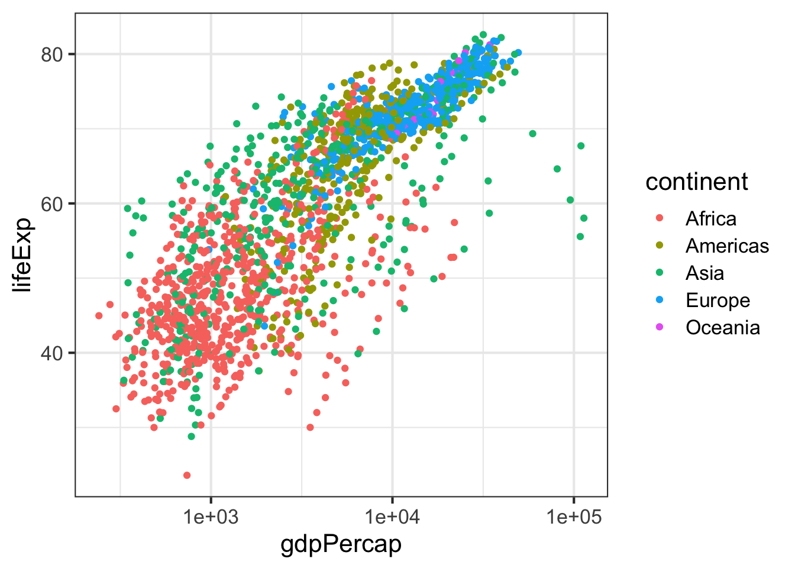
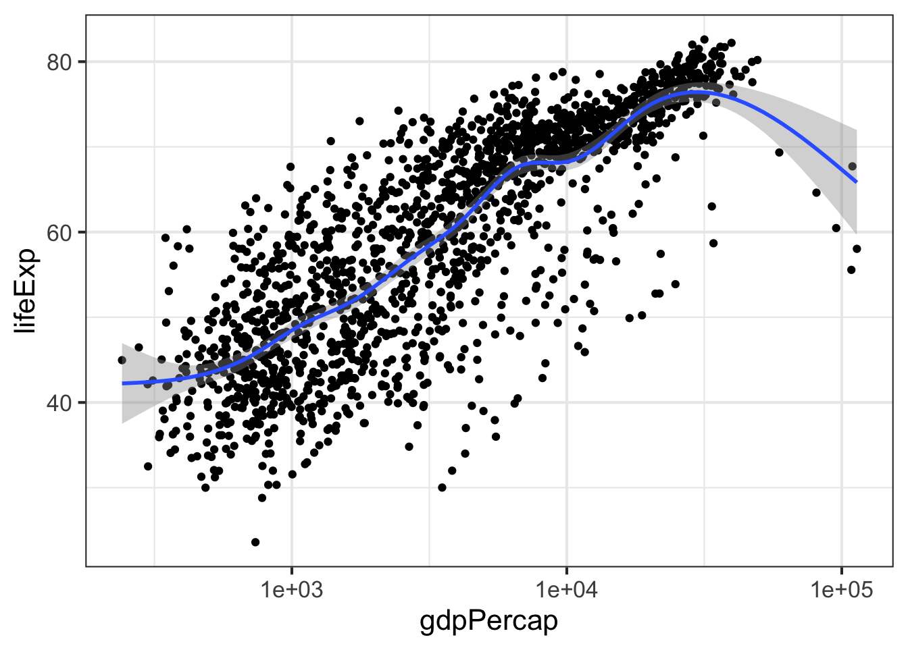
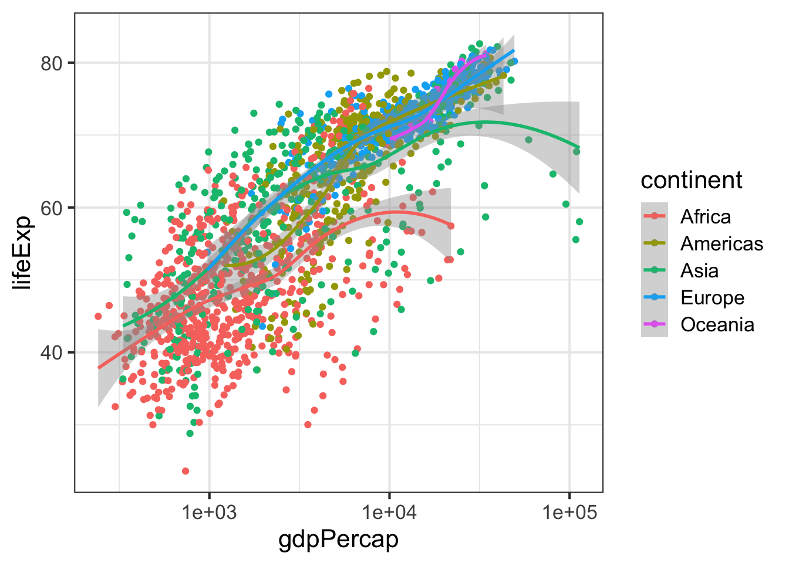
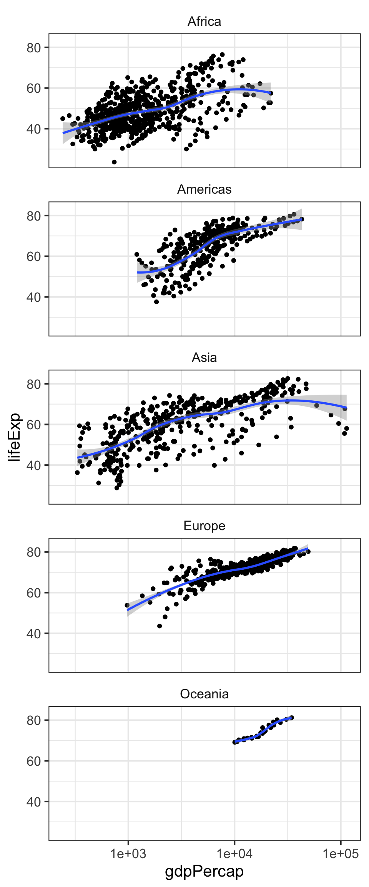
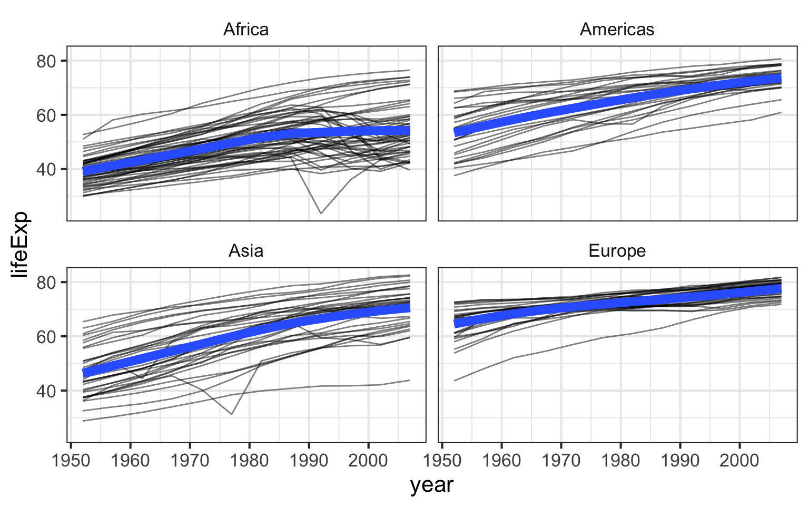

6.5 Plotting bivariate data: continuous Y by continuous X
The ggplot function has two required arguments: the data used for creating the plot, and an aesthetic mapping to describe how variables in said data are mapped to things we can see on the plot.
First let’s load the package:
library(ggplot2)Now, let’s lay out the plot. If we want to plot a continuous Y variable by a continuous X variable we’re probably most interested in a scatter plot. Here, we’re telling ggplot that we want to use the gm dataset, and the aesthetic mapping will map gdpPercap onto the x-axis and lifeExp onto the y-axis. Remember that the variable names are case sensitive!
ggplot(gm, aes(x = gdpPercap, y = lifeExp))When we do that we get a blank canvas with no data showing (you might get an error if you’re using an old version of ggplot2). That’s because all we’ve done is laid out a two-dimensional plot specifying what goes on the x and y axes, but we haven’t told it what kind of geometric object to plot. The obvious choice here is a point. Check out docs.ggplot2.org to see what kind of geoms are available.
ggplot(gm, aes(x = gdpPercap, y = lifeExp)) + geom_point()Here, we’ve built our plot in layers. First, we create a canvas for plotting layers to come using the ggplot function, specifying which data to use (here, the gm data frame), and an aesthetic mapping of gdpPercap to the x-axis and lifeExp to the y-axis. We next add a layer to the plot, specifying a geom, or a way of visually representing the aesthetic mapping.
Now, the typical workflow for building up a ggplot2 plot is to first construct the figure and save that to a variable (for example, p), and as you’re experimenting, you can continue to re-define the p object as you develop “keeper commands”.
First, let’s construct the graphic. Notice that we don’t have to specify x= and y= if we specify the arguments in the correct order (x is first, y is second).
p <- ggplot(gm, aes(gdpPercap, lifeExp))
pThe p object now contains the canvas, but nothing else. Try displaying it by just running p. Let’s experiment with adding points and a different scale to the x-axis.
# Experiment with adding points
p + geom_point()
# Experiment with a different scale
p + geom_point() + scale_x_log10()I like the look of using a log scale for the x-axis. Let’s make that stick.
p <- p + scale_x_log10()
pNow, if we re-ran p still nothing would show up because the p object just contains a blank canvas. Now, re-plot again with a layer of points:
p + geom_point()Now notice what I’ve saved to p at this point: only the basic plot layout and the log10 mapping on the x-axis. I didn’t save any layers yet because I want to fiddle around with the points for a bit first.
Above we implied the aesthetic mappings for the x- and y- axis should be gdpPercap and lifeExp, but we can also add aesthetic mappings to the geoms themselves. For instance, what if we wanted to color the points by the value of another variable in the dataset, say, continent?
p + geom_point(aes(color=continent))Notice the difference here. If I wanted the colors to be some static value, I wouldn’t wrap that in a call to aes(). I would just specify it outright. Same thing with other features of the points. For example, lets make all the points huge (size=8) blue (color="blue") semitransparent (alpha=(1/4)) triangles (pch=17):
p + geom_point(color="blue", pch=17, size=8, alpha=1/4)Now, this time, let’s map the aesthetics of the point character to certain features of the data. For instance, let’s give the points different colors and character shapes according to the continent, and map the size of the point onto the life Expectancy:
p + geom_point(aes(col=continent, shape=continent, size=lifeExp))Now, this isn’t a great plot because there are several aesthetic mappings that are redundant. Life expectancy is mapped to both the y-axis and the size of the points – the size mapping is superfluous. Similarly, continent is mapped to both the color and the point character (the shape is superfluous). Let’s get rid of that, but let’s make the points a little bigger outside of an aesthetic mapping.
p + geom_point(aes(col=continent), size=1.5)
EXERCISE 1
Re-create this same plot from scratch without saving anything to a variable. That is, start from the ggplot call.
- Start with the
ggplot()function. - Use the gm data.
- Map
gdpPercapto the x-axis andlifeExpto the y-axis. - Add points to the plot
- Make the points size 3
- Map continent onto the aesthetics of the point
- Use a log10 scale for the x-axis.
6.5.1 Adding layers
Let’s add a fitted curve to the points. Recreate the plot in the p object if you need to.
p <- ggplot(gm, aes(gdpPercap, lifeExp)) + scale_x_log10()
p + geom_point() + geom_smooth()
By default geom_smooth() will try to lowess (Locally Weighted Scatterplot Smoothing) for data with n<1000 or GAM (Generalized Additive models) for data with n>1000. (In the geom_smooth help menu you can read all about these)
geom_smooth() using method = ‘gam’ and formula ‘y ~ s(x, bs = “cs”)’. The s = smoothing function. bs = basis of smoothing and cs = cubic regression spines with shrinkage
We can change the geom_smooth() behavior by tweaking the parameters to use a linear model instead of GAM
p + geom_point() + geom_smooth(method="lm")Now tweak the parameters of the line to show a thick red line with no standard error stripes
p + geom_point() + geom_smooth(lwd=2, se=FALSE, method="lm", col="red")But let’s add back in our aesthetic mapping to the continents. Notice what happens here. We’re mapping continent as an aesthetic mapping to the color of the points only – so geom_smooth() still works only on the entire data.
p + geom_point(aes(color = continent)) + geom_smooth()But notice what happens next: if we make the call to aes() outside of the geom_point() and geom_smooth calls, then the continent variable gets mapped as an aesthetic to all the following geoms. So here, we get separate smoothing lines for each continent.
p + aes(color = continent) + geom_point() + geom_smooth()
Let’s do it again but remove the standard error stripes and make the lines a bit thicker.
p + aes(color = continent) + geom_point() + geom_smooth(se=F, lwd=2)6.5.2 Faceting
Facets display subsets of the data in different panels. There are a couple ways to do this, but facet_wrap() tries to sensibly wrap a series of facets into a 2-dimensional grid of small multiples. Just give it a formula specifying which variables to facet by. We can continue adding more layers, such as smoothing. If you have a look at the help for ?facet_wrap() you’ll see that we can control how the wrapping is laid out.
p + geom_point() + facet_wrap(~continent)
p + geom_point() + geom_smooth() + facet_wrap(~continent, ncol = 1)
6.5.3 Saving plots
There are a few ways to save ggplots. The quickest way, that works in an interactive session, is to use the ggsave() function. You give it a file name and by default it saves the last plot that was printed to the screen.
p + geom_point()
ggsave(file="myplot.png")But if you’re running this through a script, the best way to do it is to pass ggsave() the object containing the plot that is meant to be saved. We can also adjust things like the width, height, and resolution. ggsave() also recognizes the name of the file extension and saves the appropriate kind of file. Let’s save a PDF.
pfinal <- p + geom_point() + geom_smooth() + facet_wrap(~continent, ncol=1)
ggsave(pfinal, file="myplot.pdf", width=5, height=15)EXERCISE 2
- Make a scatter plot of
lifeExpon the y-axis againstyearon the x. - Make a series of small multiples faceting on continent.
Add a fitted curve, smooth or lm, with and without facets.
Bonus: using
geom_line()and an aesthetic mappingcountrytogroup=, make a “spaghetti plot”, showing semitransparent lines connected for each country, faceted by continent. Add a smoothed loess curve with a thick (lwd=3) line with no standard error stripe. Reduce the opacity (alpha=) of the individual black lines. Don’t show Oceania countries (that is,filter()the data wherecontinent!="Oceania"before you plot it).
